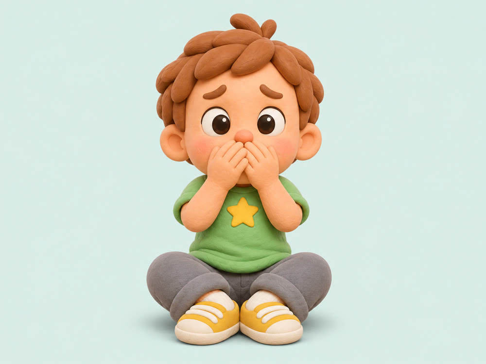

Запуск и развитие речи
От первых звуков и просьб до фраз. Работаем последовательно: слушаем, подражаем, просим, называем. Родители получают план на каждый день.

Когда стоит обратиться
- Нет слов к двум годам, только звуки и жесты
- Ребёнок тянет за руку вместо просьбы
- Речь есть, но её не понимают
- Ограниченный словарный запас, трудности с фразой
- Трудности понимания обращённой речи
С какими заключениями работаю
Задержка речевого развития, ОНР, алалия, трудности фразовой речи и понимания обращённой речи. Работаю над конкретными речевыми и коммуникативными навыками, диагноз ставит врач.
От первых звуков до фраз
- 1Слушаем и подражаемЗвуки, голос, дыхание, звукоподражание.
- 2Первые словаПросим, выбираем, называем.
- 3Слоги и словаОт одного слога к сложным словам.
- 4Фразы и рассказПредлоги, последовательность, пересказ.
Речь запускается каждый день
Ребёнок учится говорить в обычной жизни: на кухне, на прогулке, в игре. Поэтому я объясняю родителям, как действовать, и корректирую план по динамике.
- Показываю приёмы для повседневных ситуаций
- Помогаю выбрать цели на ближайшие недели
- Разбираю, что получается, и меняю план
Упражнения для развития речи
Для занятий со специалистом и самостоятельной работы. Подсказки внутри.
Как со мной работать
Стоимость сообщаю в личных сообщениях. Квалификация: повышение квалификации «Запуск речи у неговорящих детей», 144 часа, 2021 год.
Напишите, с чем вы пришли
Достаточно нескольких слов о ребёнке и запросе. Я отвечу и предложу формат.
Выберите мессенджер, который вам удобнее. VK и MAX открываются без VPN. Запись и оплата пока проходят через личные сообщения. Если вы за границей, способ оплаты (например, PayPal) и валюта обсуждаются индивидуально.